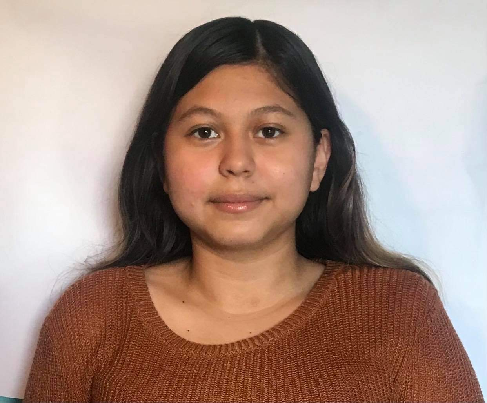

About Me
I’m a UX Designer and Researcher with a
background in frontend development and
product design. I focus on creating
human-centered digital experiences that combine design, research,
and strategy.
I’ve completed the Google UX Certificate and
gained hands-on experience through projects with
Watch Us Farm and Girls Who Code, where I worked
on UX-focused design and development solutions. At
Riley Children’s Hospital, I contributed to research by
analyzing healthcare technologies and supporting data-driven
insights.
I thrive in cross-functional teams and enjoy turning user and
research insights into impactful design solutions at the
intersection of
UX, product design, and product management.